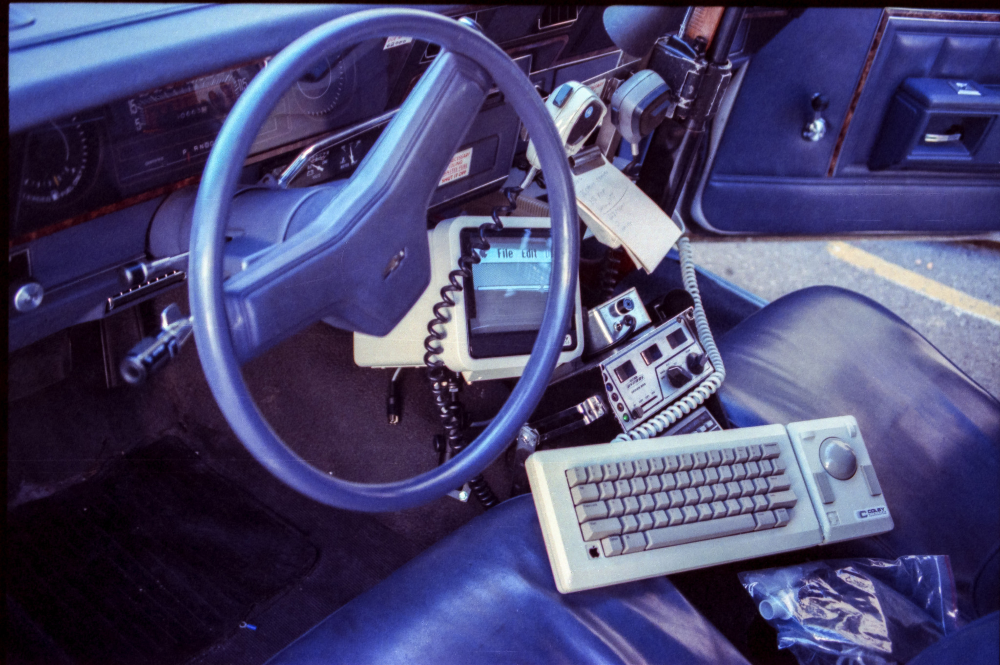
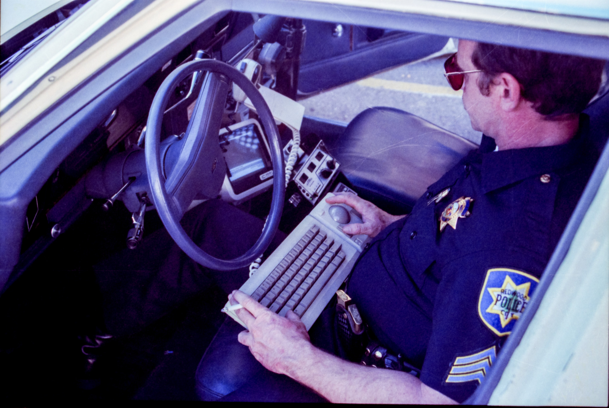

Redwood City PD testing a Colby Systems Mobile Mac (1988)
“The Colby system can be used on a Mac 512, Plus, and SE, you get a 7-inch CRT monitor, removable CPU unit, a 12-volt DC power unit, and a keyboard with trackball.”
Source: Archive.org